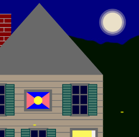
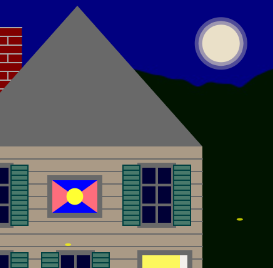

featured projects
Yubaba's Bathhouse

If the spirit world had websites. Responsive html and css. Visit Yubaba!
Firefly Game
Interactive nighttime scene created with Processing JS. Play!
functional
accessible
beautiful
I'm a designer. That said, design is not my top priority - function is. All projects must, at minimum, do what they set out to do in the most efficient manner possible. This includes being intuitive to the user, and accessible. By accessible I don't only mean accessible to those who access information on the web in a variety of ways, but easy to read, absorb, and use for everyone. Finally, when those two foundational pieces are in place, I get to come back to my first love - design. I love making work that is beautiful, and love the challenge of making beauty work in the service of brawn and brain!
Yubaba's Bathhouse
If the spirit world had websites. Responsive html and css. Visit Yubaba!
Firefly Game
Interactive nighttime scene created with Processing JS. Play!